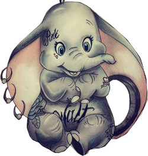
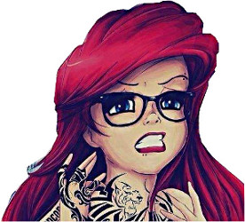

| Dumbo | La petite sirene | Alice au pays des merveilles |
|  |  | |
C'est le printemps et, les cigognes commencent à parachuter les nouveaux bébés du cirque. Toutes les mamans ont reçu leur colis sauf Madame Jumbo, l'éléphante. Elle se désole tandis qu'une cigogne égarée aperçoit le train et lui apporte un petit éléphant qui, à la grande surprise générale, dévoile des oreilles immenses comme des ailes. Les autres éléphantes accablent le petit et le surnomment Dumbo... |
Ariel, une petite sirène fascinée par le monde des humains, tombe amoureuse du Prince Eric, qu'elle a sauvé de la noyade. Pour pouvoir l'approcher, Ariel conclut un pacte démoniaque avec la sorcière Ursula : sa voix contre une apparence humaine. Si, dans 3 jours, Eric ne la pas embrassée, elle deviendra à jamais l'esclave d'Ursula... |
L'histoire commence quand la rêveuse Alice rencontre un lapin blanc parlant et désespérément en retard. Se lançant à sa poursuite, elle tombe dans un terrier et pénètre dans le Pays des Merveilles, un monde étrange et enchanté peuplé d'une galerie de personnages qui le sont tout autant. Dans ce monde, la jeune fille participe, sans le vouloir, à une danse avec des oiseaux, écoute une histoire racontée par les jumeaux Tweedle Dee et Tweedle Dum, parle avec un chat, participe à une fête de "non-anniversaire", devient géante, chante avec les fleurs et finalement repeint des roses en rouge. La confrontation finale a lieu avec la célèbre Reine de Cœur et son armée de cartes à jouer animées. Entraînée dans une curieuse partie de croquet, Alice se retrouve devant un tribunal présidé par la Reine qui la condamne à avoir la tête tranchée pour lui avoir manqué de respect... |